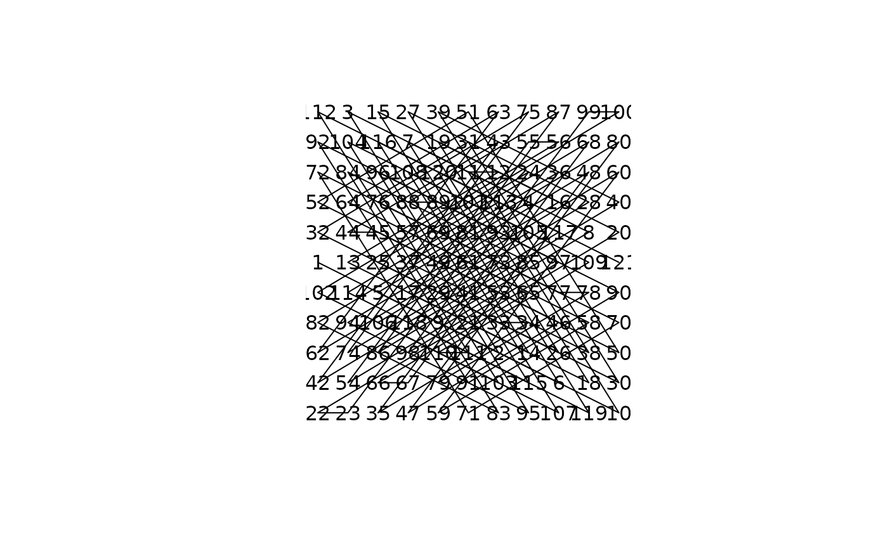

Pandiagonal magic squares due to Hudson
hudson.RdReturns a regular pandiagonal magic square of order \(6m\pm 1\) using a method developed by Hudson.
Arguments
- n
Order of the square, \(n=6m\pm 1\). If
NULL, use the length ofa- a
The first line of Hudson's \(A\) matrix. If
NULL, use Hudson's value ofc(n-1,0:(n-2))- b
The first line of Hudson's \(B\) matrix. If
NULL, use Hudson's value ofc(2:(n-1),n,1). Using default values foraandbgives an associative square
Details
Returns one member of a set of regular magic squares of order \(n=6m\pm 1\). The set is of size \((n!)^2\).
Note that n is not checked for being in the form \(6n\pm
1\). If it is not the correct form, the square is magic
but not necessarily normal.
References
C. B. Hudson, On pandiagonal squares of order 6t +/- 1, Mathematics Magazine, March 1972, pp94-96
Examples
hudson(n=11)
#> [,1] [,2] [,3] [,4] [,5] [,6] [,7] [,8] [,9] [,10] [,11]
#> [1,] 112 3 15 27 39 51 63 75 87 99 100
#> [2,] 92 104 116 7 19 31 43 55 56 68 80
#> [3,] 72 84 96 108 120 11 12 24 36 48 60
#> [4,] 52 64 76 88 89 101 113 4 16 28 40
#> [5,] 32 44 45 57 69 81 93 105 117 8 20
#> [6,] 1 13 25 37 49 61 73 85 97 109 121
#> [7,] 102 114 5 17 29 41 53 65 77 78 90
#> [8,] 82 94 106 118 9 21 33 34 46 58 70
#> [9,] 62 74 86 98 110 111 2 14 26 38 50
#> [10,] 42 54 66 67 79 91 103 115 6 18 30
#> [11,] 22 23 35 47 59 71 83 95 107 119 10
magicplot(hudson(n=11))

is.associative(hudson(n=13))
#> [1] TRUE
hudson(a=(2*1:13)%%13 , b=(8*1:13)%%13)
#> [,1] [,2] [,3] [,4] [,5] [,6] [,7] [,8] [,9] [,10] [,11] [,12] [,13]
#> [1,] 34 55 89 110 131 165 17 51 72 93 127 148 0
#> [2,] 154 6 27 61 82 116 137 158 23 44 65 99 120
#> [3,] 92 126 147 12 33 54 88 109 130 164 16 50 71
#> [4,] 43 77 98 119 153 5 26 60 81 115 136 157 22
#> [5,] 163 15 49 70 91 125 146 11 32 53 87 108 142
#> [6,] 114 135 156 21 42 76 97 118 152 4 38 59 80
#> [7,] 52 86 107 141 162 14 48 69 103 124 145 10 31
#> [8,] 3 37 58 79 113 134 168 20 41 75 96 117 151
#> [9,] 123 144 9 30 64 85 106 140 161 13 47 68 102
#> [10,] 74 95 129 150 2 36 57 78 112 133 167 19 40
#> [11,] 25 46 67 101 122 143 8 29 63 84 105 139 160
#> [12,] 132 166 18 39 73 94 128 149 1 35 56 90 111
#> [13,] 83 104 138 159 24 45 66 100 121 155 7 28 62
all(replicate(10,is.magic(hudson(a=sample(13),b=sample(13)))))
#> [1] TRUE